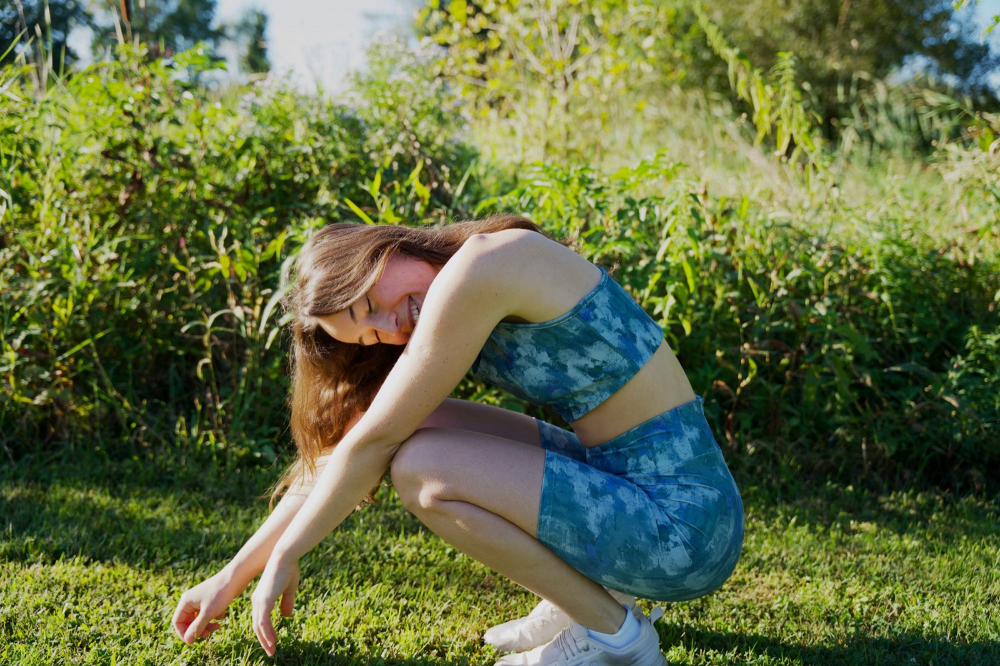

Godine 2023. provela sam godinu dana na razmjeni u SAD-u, na koju sam otišla s plaćenom agencijom BHV Education, a nisam ni slutila koliko će mi to promijeniti život. Otišla sam misleći da idem samo na jednu školsku godinu, a ta mi je jedna godina promijenila sve.
Tamo sam upoznala i svog dečka. Danas nekoliko mjeseci godišnje provodim kod njega u SAD-u, a on ljeti dolazi k meni u Hrvatsku, pa je moj život danas negdje između Hrvatske i SAD-a.
Sada dijelim iskustva, savjete i sve ono što bih voljela da mi je netko rekao prije odlaska. Ovdje ćeš naći savjete, priče i inspiraciju za razmjenu, a učim te svemu, od toga kako se prijaviti na godinu razmjene do toga kako da ti to bude najbolja godina života! Dijelim i kako život u inozemstvu stvarno izgleda, uz savjete o tome kako izaći iz zone komfora, steći samopouzdanje, stvoriti život kakav želiš i postati bolja verzija sebe. A ono što me najviše veseli: pomoći nekome s Balkana da i sam ode u Ameriku. Na godinu razmjene u srednjoj, studij ili program od par tjedana.